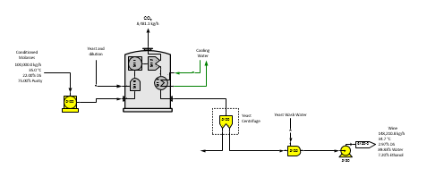
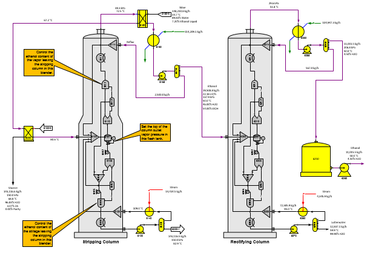

Page 1
Page 1 shows molasses conditioning to convert sucrose to invert using a reactor station (no. 5100) and fermentation of invert in molasses to ethanol. The fermenter is a grouping of a blender, reactor, separator and heat exchanger stations to model the behavior of an actual fermenter. Sugars does not have a component for yeast and the blender station no. 5110 just allows for the addition of a yeast solution to be added to the fermenter. The yeast centrifuge allows for the loss of invert from the yeast.

Page 2
The model of distillation to produce hydrous ethanol is shown in Page 2 above. The fermented solution (wine) passes through a heat exchanger (station no. 6150) that preheats the solution using vapors from the stripping column and then through another heat exchanger that heats it further using stillage. The station grouping for the stripping and rectifying columns is the same and the performance of the two columns is controlled by the data entered for the stations in the grouping and the reflux and recirculation defined for the columns. Liquid ethanol in the wine is converted to vapor in the flash tank (station no. 6101 for the stripping column and 6201 for the rectifying column). A separator station is used to separate ethanol and water vapors from the vapor leaving the flash tank and then a blender station is used to control the water content of the vapor leaving each column. The water content is obtained from factory data; however, the water content should not be less than 4.37% for the vapor leaving the rectifying column which is the water content at the azeotrope for ethanol-water mixtures. The water content of the vapor out of the stripping column is much higher (normally around 45% to 50%) and achieving a balance in this column is not as sensitive to the recirculation and/or reflux quantities. The rectifying column is more difficult to balance because of the low water content in the vapor leaving the column. Insufficient recirculation and/or reboiler outlet temperature will cause insufficient water vapor from the separator station no. 6210 in the rectifying column to satisfy the column vapor out water content.
Other equipment can be added to this model to produce anhydrous ethanol.